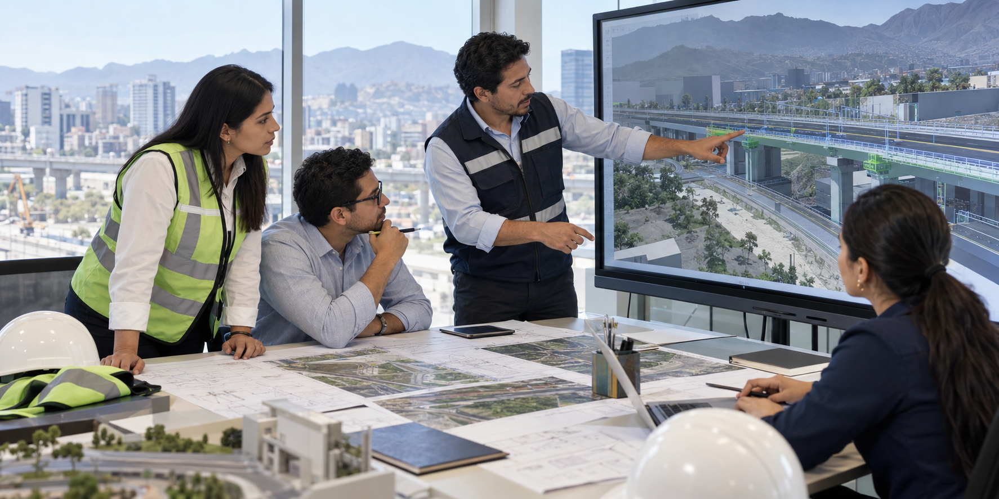

Misión
Convertir ideas en soluciones reales.
Aplicamos experiencia profesional, metodología BIM y gestión eficiente para desarrollar proyectos con calidad, seguridad y responsabilidad.
Ingeniería | Consultoría | Construcción | Ingeniería Ambiental
Convertimos ideas en soluciones reales para proyectos de ingeniería, construcción e infraestructura responsable.
Quiénes somos
LHS NOVA INFRA nace para acompañar proyectos de infraestructura desde la idea hasta la ejecución, integrando consultoría, construcción, BIM y sostenibilidad en una sola mirada técnica.

Misión
Aplicamos experiencia profesional, metodología BIM y gestión eficiente para desarrollar proyectos con calidad, seguridad y responsabilidad.
Visión
Buscamos aportar a infraestructura que transforme positivamente ciudades, comunidades y la vida de las personas.
Enfoque
Planificación, supervisión y comunicación clara para reducir riesgos desde las primeras decisiones del proyecto.
Ingeniería en movimiento
Las grandes decisiones de obra se ganan antes de iniciar campo: con diagnóstico, diseño, control y seguimiento. Nuestro enfoque prioriza orden, trazabilidad y comunicación clara en cada etapa.

Servicios destacados

Estudios, criterios técnicos, levantamientos y soporte para definir proyectos con mayor precisión.
Ver alcance
Coordinación digital, dirección técnica y control de proyectos bajo enfoques EPCM y PMC.
Ver alcance
Desarrollo y ejecución de obras civiles con planificación, calidad y control de campo.
Ver alcance
Soporte técnico para sectores exigentes donde la seguridad y continuidad operativa son críticas.
Ver alcance
Atención de activos, abastecimiento técnico e instalación de equipamiento para continuidad operativa.
Ver alcance
Gestión ambiental, manejo de residuos y criterios sostenibles para proyectos responsables.
Ver alcanceNuestras principales areas
Consultoría, diseño, supervisión, gestión de proyectos y acompañamiento técnico para reducir incertidumbre.
Modelado BIM, revisión digital, compatibilización y soporte visual para equipos técnicos y clientes.
Minería, hidrocarburos, construcción electromecánica, mantenimiento de activos e infraestructura crítica.
Ingeniería ambiental, sostenibilidad, seguridad, calidad y cumplimiento técnico-normativo.
Nuestros proyectos
Una vitrina visual para presentar obras, avances en campo, entregables y casos destacados con una lectura clara del alcance, la supervisión y los resultados.
Solicitar propuesta Infraestructura
Supervisión
Infraestructura
Supervisión
 Consultoría
Consultoría
Clientes
Espacio preparado para mostrar logos de clientes, aliados y organizaciones cuando la empresa autorice su publicación.
Equipo y confianza
Un equipo preparado para coordinar, supervisar y tomar decisiones con orden, seguridad y visión técnica en cada etapa del proyecto.
Gerencia técnica
Dirección, prioridades claras y decisiones con sustento.
Supervisión
Control de avance, calidad y seguridad en obra.
Coordinación digital para evitar interferencias.
 Calidad y seguridad
Calidad y seguridad
Procesos claros, cumplimiento y seguimiento.
Sostenibilidad
Criterios ambientales desde la idea hasta la entrega.
Contacto
Comparte una idea general del proyecto y organizaremos una primera conversación técnica para entender alcance, prioridades y siguientes pasos.